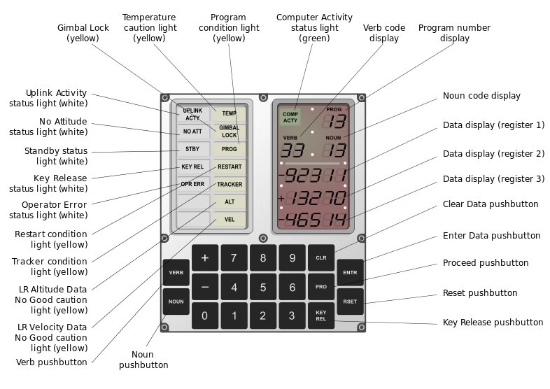

AGC was the main computer system of the Apollo program that successfully landed 12 astronauts on Moon. There was one AGC on each of the Apollo Command Modules and another one on each Lunar Module. There was also a second backup computer system called Abort Guidance System (AGS) on the Lunar Modules, which is simulated by Virtual AGC, but not the current version of Moonjs.
Astronauts interacted with AGC by using DSKY, a combination of 7-segment numerical displays, indicator lights and a simple keypad, which is simulated on this page.

The simulated DSKY communicates with a simulated AGC, which in turn runs a copy of Colossus 249, the flight software that flew on the Apollo 9 Command Module.
DSKY human interface was built around the concept of Verbs and Nouns. For example, Verb 06 can be used to display the value of near 100 different memory locations selected based on the given Noun.
Some Examples Codes:
Test the DSKY lamps (digits and indicators) by entering
.
Try
.
This command monitors the current time. The lower 5-digit display shows seconds,
the middle one minutes and the topmost one hours elapsed since AGC powered up.
Start program P00, the idle program, by entering
.
Enter
.
It shows the checksum of the first bank of the fixed memory (the so called core-ropes in AGC terminology).
The fixed memory is divided into 38 banks, each containing 1024 (1K) 15-bits words. The top 5-digit display
shows the checksum in octal, which should be either the bank number or its 1-complement (e.g., for bank 3
either a value of 00003 or 77774 is acceptable). The middle row is the bank number and the third row is a
bugger word appended to the end of each bank to make the checksum the correct value. By entering
or pressing
,
you can get the statistics for the next bank.
Let's try some spaceflight related programs! Enter
.
It shows the current velocity (top row), altitude rate (middle row) and altitude (botton row).
Unfortunatelly, we are not going to space today, so all three show 00000 and will continue to
do so. During an actual launch (or a simulated one), they would update with current values.
If instead of Verb 06, we use Verb 16, the same values are shown and updated constantly until
a differnt command is entered. In fact, this program was used during the boost phase of Saturn V
launches to allow astronauts monitor the progress of the launch vehicle.
For many more examples and details about AGC, its programming and operation, two great sources are
the excellent Virtual AGC website by Ronald Burkey and
"The Apollo guidance computer : architecture and operation" by Frank O'Brien. The wikipedia
page for AGC also contains
lots of useful information and a comprehensive bibliography.
Why Javascript?
Recent advances in the javascript language - such as optimized engines, ahead-of-time (AOT) compilation, and asm.js -
make it possible to write computationally extensive applications in javascript. My previous experience
with online javascript-based simulation (svtsim and hemosim)
was very positive and convinced me of the suitablity of the HTML5/javascript combination in writing
portable, easy-to-use simulators. Moonjs is the logical next step that uses Emscripten compiler to convert
existing C code into asm.js, a highly-optimizable subset of javascript.